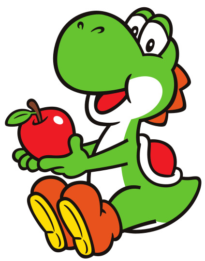

| Nombre: | Año |
|---|---|
| Yoshi | 1991 |
| Yoshi's Cookie | 1992 |
| Yoshi's Safari | 1993 |
| Super Mario World 2: Yoshi's Island | 1995 |
| Yoshi's Story | 1997 |
| Yoshi's Topsy-Turvy | 2004 |
| Yoshi Touch & Go | 2005 |
| Yoshi's Island DS | 2006 |
| Yoshi's New Island | 2014 |
| Yoshi's Woolly World | 2015 |
| Yoshi's Crafted World | 2019 |
| Yoshi and the Mysterious Book | 2026 |
| Derechos reservados © |